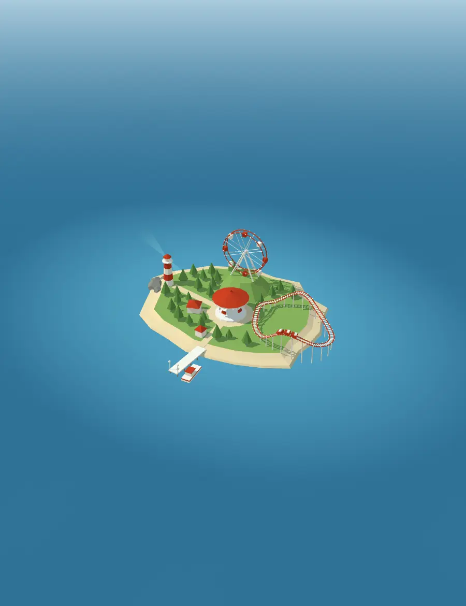

선착장
남쪽 해안
섬으로 오는 배가 닿는 곳이에요. 섬 구경은 여기서 시작해요.

배를 타고 들어가는 섬에 놀이기구 다섯 곳이 모여 있어요.
끌어서 섬을 돌리고, 휠로 가까이 볼 수 있어요.
옆으로 밀어 섬을 돌리고, 두 손가락으로 가까이 볼 수 있어요.
명소를 고르면 그곳으로 가까이 가요.
남쪽 해안
섬으로 오는 배가 닿는 곳이에요. 섬 구경은 여기서 시작해요.
가운데 광장
섬 한가운데 광장에서 천천히 돌아요.
북쪽 언덕
섬에서 가장 높은 언덕 위에 있어요. 꼭대기에서는 섬 둘레 바다가 다 보여요.
동쪽 해안
동쪽 해안을 따라 달리다가 바다 위로 잠깐 나가요.
서쪽 끝
섬 서쪽 끝 바위 위에 있어요. 꼭대기에서 불빛이 돌아요.